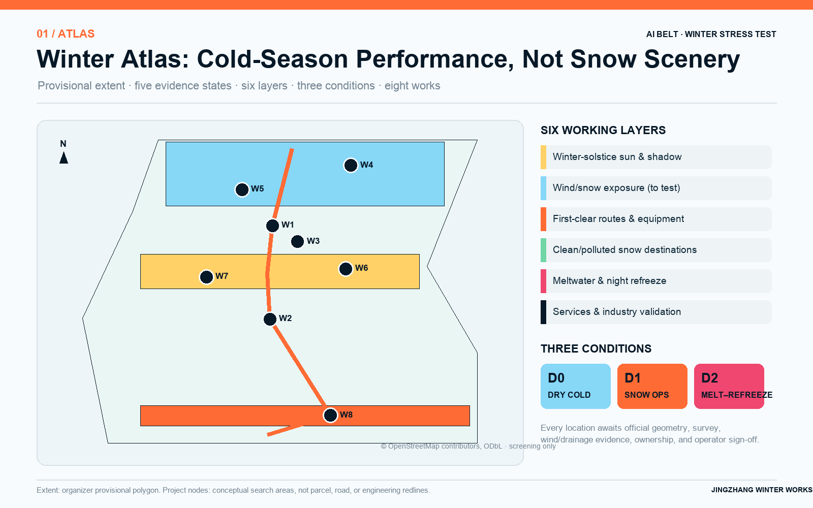
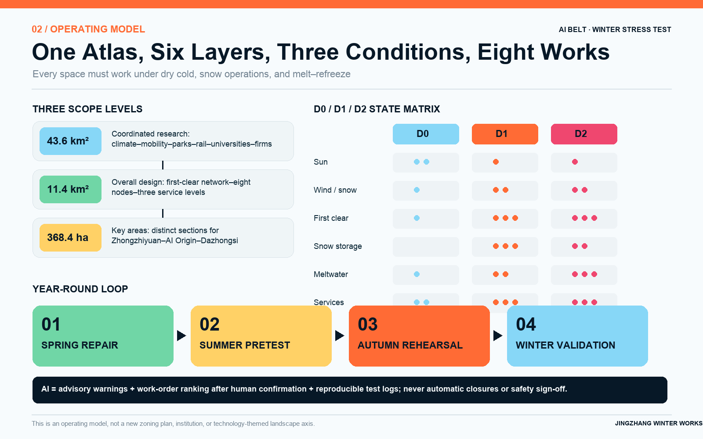
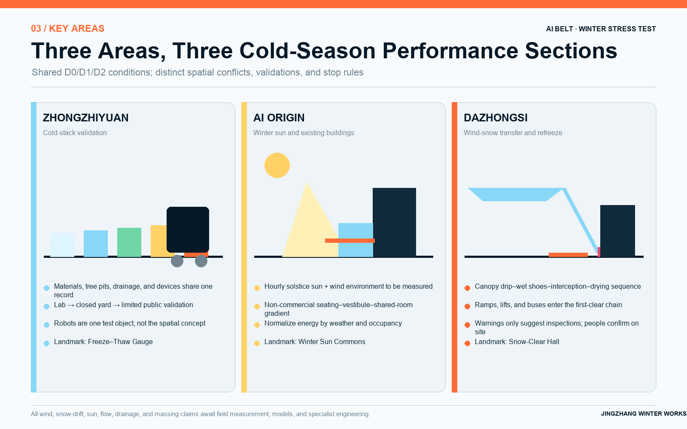
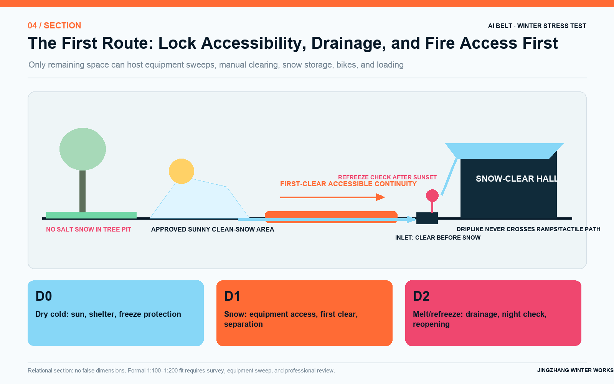
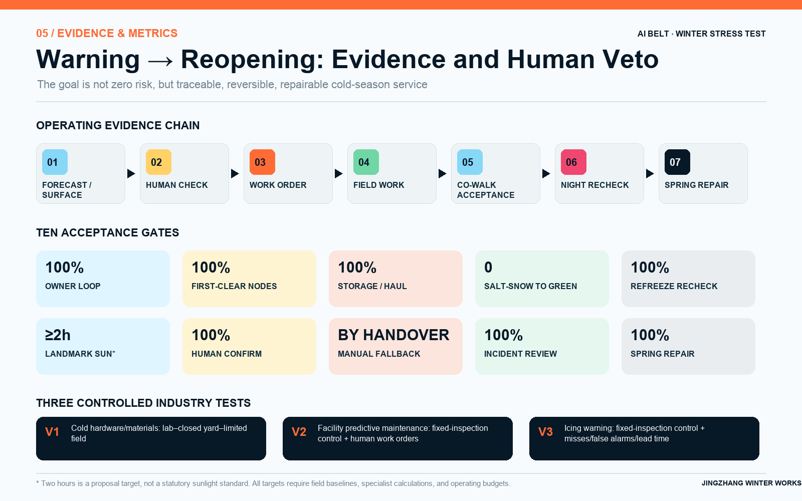

Overview Map

Three-Level Scope
Coordinated research: industry, climate, and operating networks.
Overall design: first-clear chains, snowmelt paths, eight nodes.
Key-area design: three complementary cold-season sections.

Key Areas
Zhongzhiyuan
Cold-stack testing of devices, materials, tree-pit edges, and drainage.
AI Origin
Winter-sun public life, vestibules, and existing-building energy comparisons.
Dazhongsi
Wind-snow transfer, wet entrances, night refreeze, and continuity.

Mobility · Blue-Green/Public Space · Buildings · Renewal Projects

Land use is a topology carrier; buildings are need envelopes; routes are candidate links, never false redlines.
AI Scenarios · Core Metrics
Provisional polygon recalculation; low confidence.
Winter green search areas / provisional extent.
Eight conceptual project search areas / provisional extent.

Task Coverage
Self-Check Status
Structure, extent, metrics, figures, and bilingual companions are complete; repository scripts remain authoritative.
Sources
Official notice, current laws/standards, Beijing climate and snow policy, taskbook, case websites, and attributed OSM; see sources.json.
Assumptions
Official geometry, controls, survey, wind, snow, drainage, ownership, flows, equipment, and budgets remain pending; see assumptions.json.